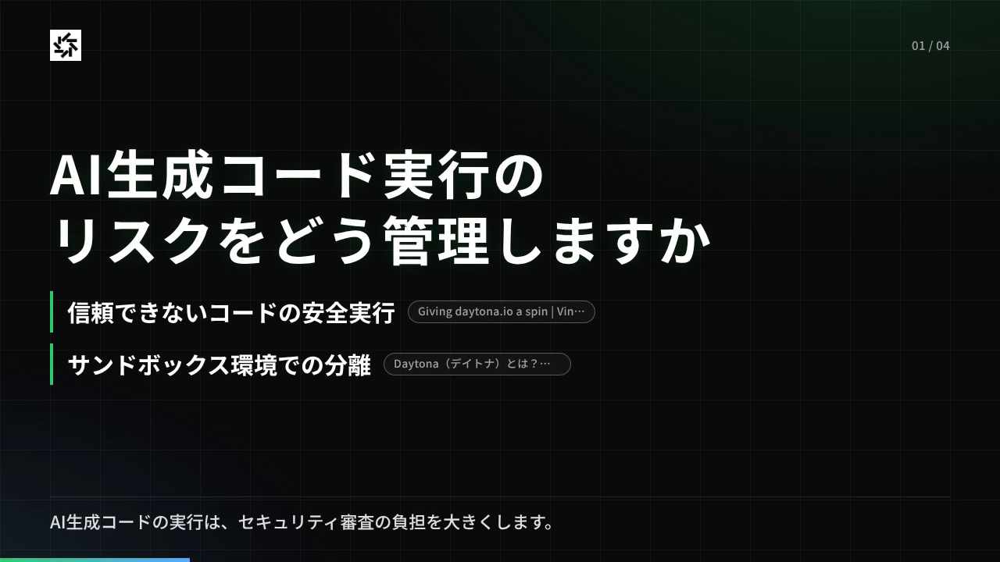
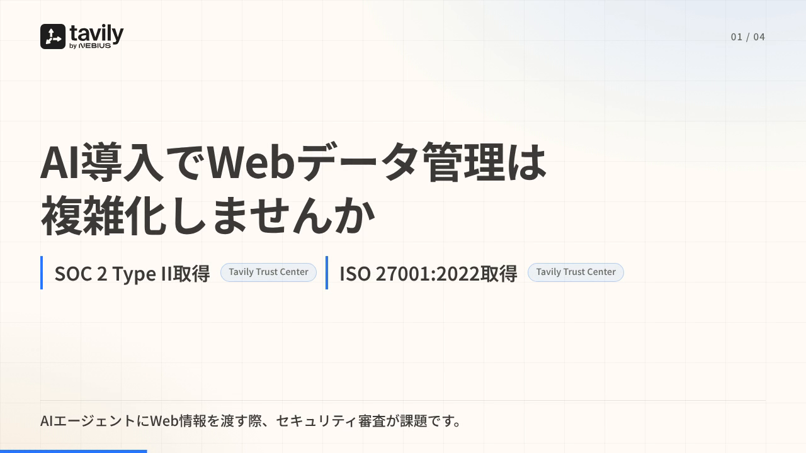
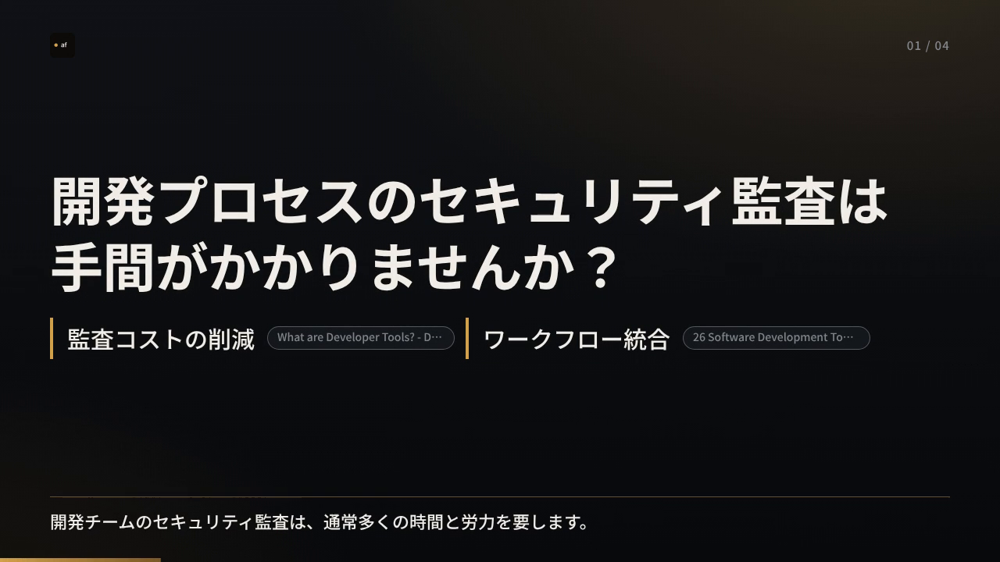
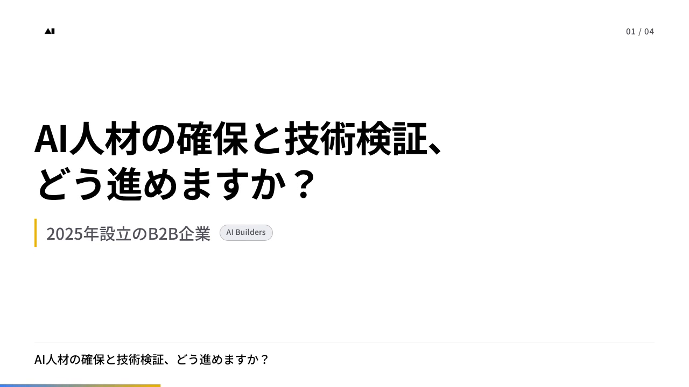
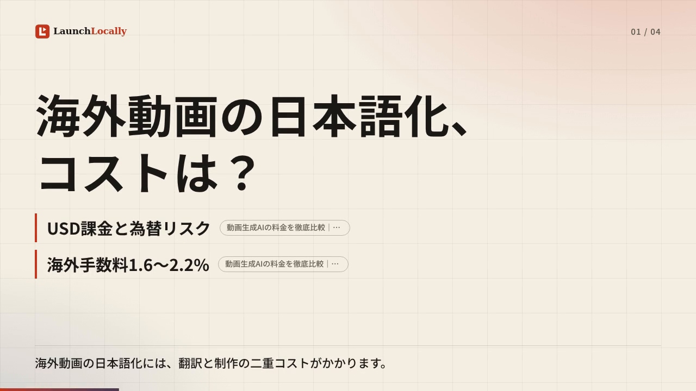
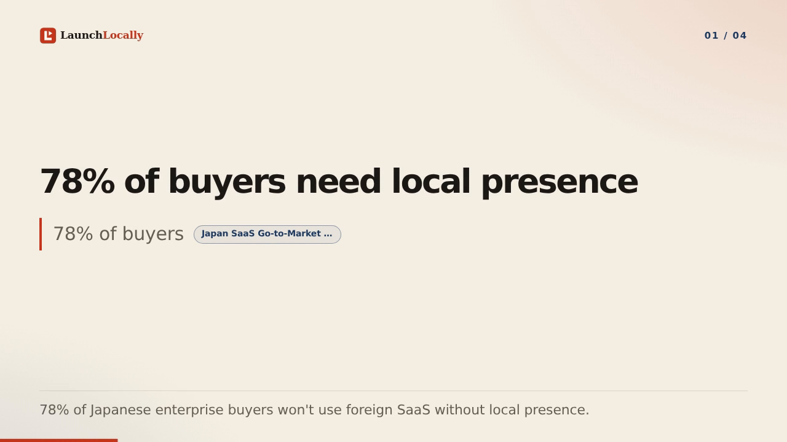

Recorded runs
One URL in. A launch video and a sourced brief out.
Each card is a real run of the pipeline, replayed in your browser: the research, the script, the local buyer's review, the video and every claim's source. Open one and press play.
Scan to open this page

Daytona
www.daytona.io for Japan

Tavily
www.tavily.com for Japan
Nosana
nosana.com for Japan

CodeAF
agentfield.ai for Japan

AI Builders
www.theaibuilders.dev for Japan

LaunchLocally
wei.github.io/launchlocally for Japan

LaunchLocally
wei.github.io/launchlocally for International (English)